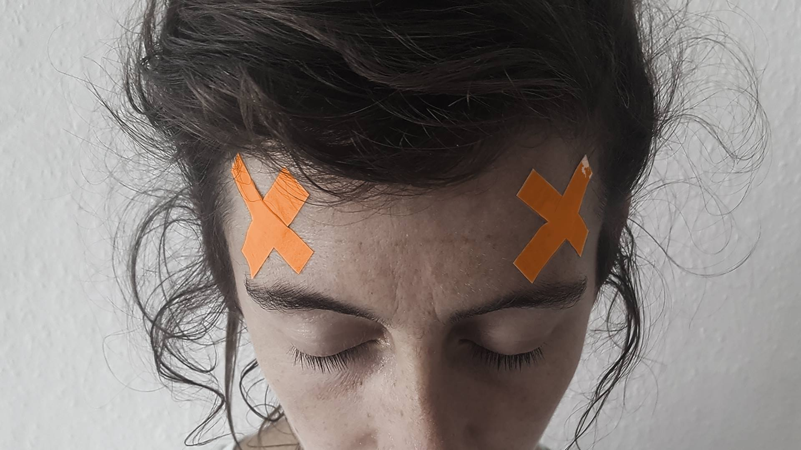

Le jeudi 15 novembre 2018 - A partir de 18h
Gratuit

« En hectolitres, vous m'entendez, en hectolitres je vous arracherai
ce que vous m'avez refusé en grammes ! »
Citation d'à peu près Henri Michaux
En plein cœur des Marolles, L’Héctolitre fut un club échangiste. Aujourd’hui, catalyseur d’échanges, c’est encore un lieu de rencontre entre artistes, coordinateur·rice·s s culturel·le·s, chercheur·e·s, voisin·e·s, bref, entre des gens, quoi. Un peu comme Papier Machine.
Notre numéro 8 – CORNE et certain·e·s de ses contributeurs et contributrices viendront occuper ce labyrinthe historique le temps d'une soirée. L'occasion de se promener, en catimini sur les balustrades en fer forgé qui opposent le vrai au faux, de valser avec le vide et le plein, de trinquer avec le lié et les déliés.
CORNE, un numéro tout en oppositions réconciliées, vous sera présenté dans ses habits de lumière et tout en musique. Et, entre deux effeuillages, on essaiera de faire battre nos cœurs lors d'une mini-conférence, un mini-concert, un giga-bar et des macro-sourires.
On essaiera. N'est pas artichaut qui veut.
[Lien vers l'événement facebook]
AU PROGRAMME
19h30: « Tout sur ce que je ne suis pas » - lecture (15')
Dans Papier Machine, Ségolène Thuillart et Harold Mollet enquêtent sur ce travail qui nous use, ce système qui voudrait nous réduire à de petites cases, et titillent le droit à la paresse.
Ici, Ségolène proposera une lecture-compilation de plusieurs performances. La partition créée souligne les limites du système administratif et met en lumière la rigidité et l'aspect mécanique de ces imprimés. En explorant sans relâche la négation, ce texte construit une réflexion sur l'identité de l'artiste et explore les réflexions de l'artiste autour du langage.
http://segolenethuillart.tumblr.com/
21h20: Performance/Concert de Dance Divine (40')
Comme la clé serrure dans la clé du divin quotidien Courcorne, douce fauve aux pros tubes de danses, débarque dans un écosystème pré- écrit pour pousser les arrivistes fleuris plus près du troutrone Dance Divine se metacornphose de la scène à la machine
https://www.facebook.com/dancedivinez/
Et toute la soirée :
Drames de la jalousie et dérapages du quotidien - projections
Échappés des pages de Papier Machine numéro 8, projections continues des terrifiants faits divers déconstruits et reconstruits par Emilie Gomez (photographe) et Florian Tixier (doctorant en sociologie du journalisme).
MAKE IT SOUND, un fablab sonore bruxellois qui récupère et booste du matériel audio pour leur donner une seconde vie, viendra sonoriser et musicaliser la soirée.
https://opencollective.com/make-it-sound
https://www.facebook.com/makeitsoundbxl
PAPIER MACHINE n°8 :
Papier Machine numéro 8 a élu le mot Corne pour réducteur en chef. Du haut de ses cinq lettres, il a tranché dans l’étendue de ses possibles pour extraire de sa substantifique moelle ce numéro de 96 pages, imprimé à 600 exemplaires sur du papier recyclé et cousu au fil de lin.
Au sommaire de ce numéro huit, un précis de taxidermie à usage social, une enquête lexicale doublée d’une polémique pâtissière, un lapsus de caisse enregistreuse, un hommage anti-mythe, un conte d’apothicaire, des canonisations électriques, des mensurations-hameçons, des brevets-gloutons, le retour de la lune dans nos campagnes, des dérives homonymiques, de la cochonnaille dystopique, un traité de pilosité générale, un requiem pour une attente, une épopée immobile, neuf carrés magiques et vingt-trois jeudis de novembre à 17h32.
Il a été mis en page par Mikail Koçak (Mermermer) et imprimé à Snel (Liège).
Avec les contributions de :
Benjamin Baret, Émilie Gomez & Florian Tixier, Adel Tincelin, Stéphanie Paulus, Bertrand Serra, Antoine-Toussaint Casanova, Maryline Desbiolles & Rochegaussen, Benjamin Leclercq, Grégory Voivenel & Denis Defarges, Lola Avril, Maïa Vandaele, Harold Mollet & Ségolène Thuillart, Dimitriois Mastoros, Lucie Combes, Raphaël Touron, Deniz Erbaş, Coline Sauvand, Valentine Bonomo, Elsa Brès, Clarisse Galey.
[Ecrit et organisé par Papier Machine]
ADRESS:
HECTOLITRE - Catalyseur d’échange
Rue de l'Hectolitre 3-5,
1000 Bruxelles